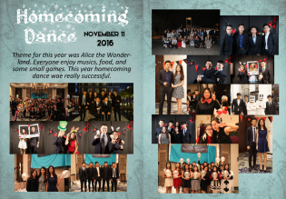

Class: Journalism
Teacher: Mr. Cutis
Project Name: Homecoming Dance Yearbook Page
Course Description: Journalism is a course designed for students interested
in newspaper journalism and developing their skills as a writer. The course explores the
contemporary media and the ethical responsibility issues inherent in the press today. Students
will learn the fundamentals of news, feature, editorial and sports writing. Copy reading, news
style and editing will be stressed. Students will create numerous original stories using varied
structures and writing techniques. Students will also learn to create computer generated layouts
and graphics.
The following picture was I made in Journalism class. It is a Homecoming yearbook page.
